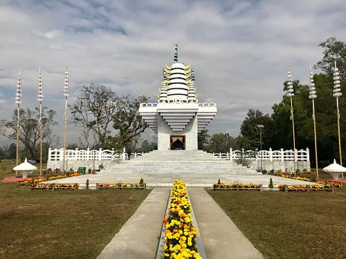

The term "Dzukou" is originated from a word common to both Angami and Mao languages, which can be translated as "cold water", with reference to the cold stream flowing throughout the valley area.
Imphal Valley, also known as Manipur Valley, is an irregular, almost oval-shaped valley in the Indian state of Manipur, formed by rivers flowing from surrounding hills, and is home to the state capital, Imphal.
Keibul Lamjao National Park, the world's only floating national park, is located in the Bishnupur district of Manipur, India, and is an integral part of Loktak Lake, known for its unique "phumdi" (floating mats of soil and vegetation) ecosystem, and is home to the endangered Sangai deer.
The Khuga Dam, located south of Churachandpur town in Manipur, India, is a multipurpose earthen dam designed for electricity generation, irrigation, and drinking water supply, but its construction faced delays and cost overruns.
Cheirao Ching is a scenic hill in Imphal West, Manipur, known for its breathtaking views of the Imphal Valley and is a popular spot for visitors and locals alike.

The Lainingthou Sanamahi Temple, also known as Sanamahi Kiyong, is a prominent Meitei temple dedicated to Lainingthou Sanamahi, the supreme deity of Sanamahism, located in the Nongmaiching Hill of Imphal East district, Manipur, India.
Sadu Chiru Waterfalls, located in the Senapati district of Manipur, is a popular tourist destination known for its picturesque perennial waterfalls cascading down verdant hills, offering a blend of natural beauty and adventure.

Waithou is a small and interesting Manipur tourist place in the district of Thoubal, primarily because of the Waithou Lake. The lake increases the scenic beauty of the place tenfold with crystal clear water and lush green surroundings

Kaina Hillock, located in Manipur, India, is a small, sacred hillock about 29 kilometers east of Imphal, known for the Shri Govindajee temple and the legend of a sacred jackfruit tree from which the idol was carved.

he Singda Dam is the world's highest mud dam, which is located 16 kilometers from Imphal, the capital city. The trip to the dam is scenic, with rice fields and beautiful green hills in the background.

Located near the royal palace, the Shri Govindajee Temple is one of the main places to visit in Manipur. The well contrasted golden twin-domed temple has been built in the Nagara style of architecture and is dedicated to Shri Govindajee, but houses the idols of several other Hindu deities including Lord Krishna, Lord Jagannath, Lord Balaram, Goddess Radha, Goddess Balabhadra and Goddess Subhadra.
The state has its share of lush green tea plantations that make for some of the most interesting places to visit in Manipur. The Nillai Tea garden is no different and gives you an opportunity to explore the expansive tea estate and partake of some of the most aromatic flavors of black and green teas that are grown here.